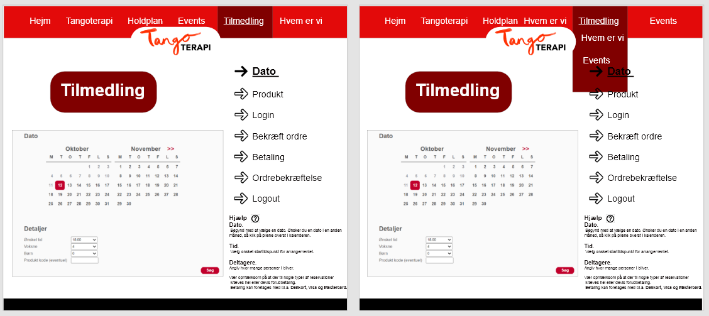
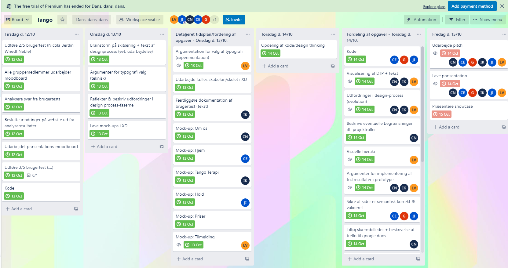

Som det første project fik vi til opgave at kode en side i Html og Css som set på billedrene. Da det var vores første project skulle vi ikke fokusere på meget andet ind at lære basics inde for kodning. I vores project valgte vi at lave en hjemmeside til en festival I rummet. Hvor min del var at lave et lineup der skulle spille. Det meste af min tid var derfor brugt på at lære hvordan man lave et Html/ Css sheet der kan blive valideret.
I andet project blev vi introduceret til en anden side af multimedie design. Den nye måde at tænke på hed "Design Thinking", hvilket er blevet vores bread and butter. Vi blev også sat in I programmet Xd. Et Adobe program hvor man kan udrette Wireframes og Mockups. Her grep vi også hånd om usability. Vi lavede modboaords som vi tested på vores bekendte. Her ud fra lavede vi personaer som var et visuelt manifestation af vores ideale målgruppe.
Projektet var delt op I to dele. Hvor vi I 2# skulle overtage et project fra en anden gruppe. Dette krævede meget kommunikation I grupperne. Hvilket lete til at vi ud delegerede roller for at give projektet mere struktur. Her blev jeg valgt som projektleder. For at være sikker på at vi fik lavet vores ting udviklede vi også et Kanban som vi skulle følge samt en gruppe kontrakt. Vores Xd fagligheder blev også finpudset da vi matte lave et Mockup med interactive features som vi inkluderede I vores Webside.
Denne opgave introducerede os til Marketing og Business siden af Multimedie design. Betydning og forståelsen af alle de "intricacies" som opstår når man skal lave et brand. Hertil lærte vi hvordan man udvikler et Business Model Canvas, et redskab som hjælper dig med forståelsen af alle de faktorer som skal kunne fungere i synkronitet for at en virksomhed/ brand kan komme op og køre. Dette inkluderede Prototype og testing, Markedsanalyser, Koncept udvikling, Økonomisk levedygtighed samt meget andet.
Så kom SoMe og Branding. Her arbejdede vi videre på at udvikle vores identitet for vores brand. Det gjorde vi blandt andet ved at lave SoMe opslag. Men vi brugte også meget tid på at udvikle hvad vi stod for og hvem vi er. Det gjorde vi ved at kigge på trends og tendenser i det eksisterende marked. I dette project blev vi også introduceret til GitHub/kraken. Et radskab som hjælper med at dele ens Html samt giver en klar historik af rettelser og ændringer.
Video. Med dette project fik vi lidt buste rum hvor vi ikke behøvede at tænke modeler, analyser og formularer. Vi lærte at ud arbejde en video med kreativ frihed. Hvordan et story board er lavet, hvilke vinkler skal man filme fra. Lysets rolle I video. Zoom og frames kameraet skal brug for at få det rigtige footage. Vi blev også introduceret til Media lab. Et rum med alt udstyr som Zoom recorder, blue/ green screen, lys og Reflector og meget andet. Med udstyret på plads, fik vi kendskab til Video editing tools så som Premiere Pro og After Effects. Disse redskaber hjalp os med at "align" lyden med vores "footage". Vi lærte også hvordan man klipper og justere de forskelige properties af ens "footage".